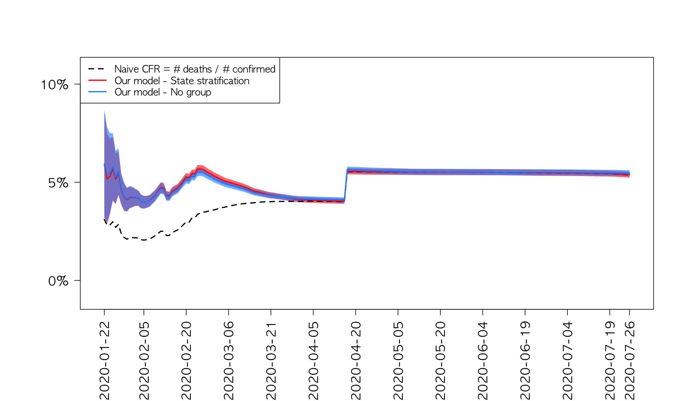
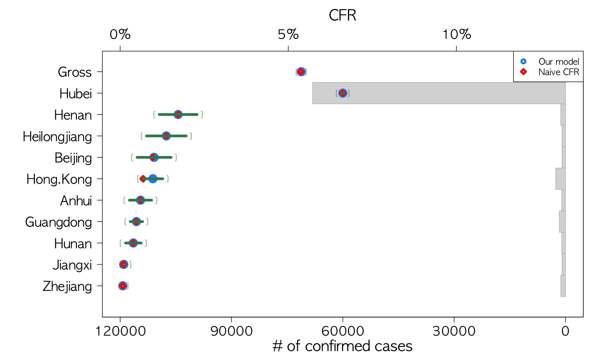

Korea
US
China
Global
Methods
COVID-19 Case Fatality Rate: China
7/26/2020
Trend of Daily Gross Case Fatality Rate

Latest Province-wise Case Fatality Rates(TOP 10 provinces in No. confirmed patients) as of 7 / 26 / 2020

Data source
Daily updated global data can be downloaded from the below link:
https://github.com/CSSEGISandData/COVID-19